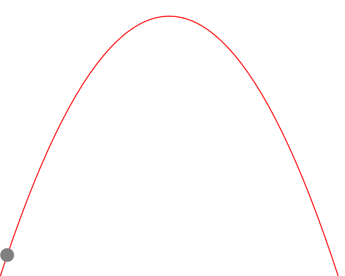
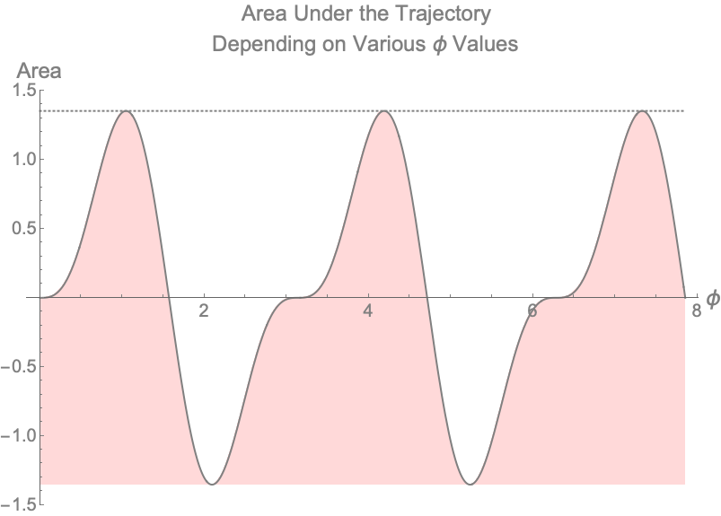

Optimizing Trajectory Angle
Introduction
I had the pleasure of teaching physics for the Pre First-Year Academic and Career Engagement (PREFACE) Program. These are students that graduated high school and are transitioning into college to study engineering. The following is a problem I gave my students as a challenge question on their final. Many students found this problem interesting and we had a long discussion about the power of learning theoretical mechanics for the future of their respective degrees.
The Problem
A ball is thrown at speed $v_o$ from zero height on level ground. At what angle $\phi$ (from horizontal) should the ball be thrown such that the area under the trajectory is maximized? (Assume no air resistance)
Visualize the Problem
It’s important to visualize the problem at hand. We can ask questions such as:
- How does the shape of trajectory change with different $\phi$?
- How does the area under the curve change with changing $\phi$?
Let’s take a look at what this might look like.
 Figure 1 — Visualizing Trajectory of Ball
The Physics
In order to find the area underneath a curve, we can use calculus. Generally, the area of an arbitrary curve in our x—y plane is:
$$\int_{x_o}^{x_f}y dx$$
For projectile motion, x and y are expressed as:
$$x = x(t) = v_{o,x} t = v_o cos(\phi) t$$
$$y = y(t) = v_{o,y} t - \frac{1}{2}g t^2 = v_o sin(\phi) t - \frac{1}{2} g t^2$$
We can use these expressions to integrate the curve in order to find the area. Note that x and y are both in terms of t, this is called parameterization because we’re turning a multi-variable equation into an equation with one “parametric” parameter, t. Let’s first talk about the integral bounds of the new integral that is now in terms of t:
It makes sense to allow time to start at zero: $$t_o = 0$$
Now to find final time, let’s find where the ball hits the ground again:
$$v_o sin(\phi) t - \frac{1}{2} g t^2 = 0$$ $$t_{final} = \frac{2 v_o sin(\phi)}{g}$$
To find $dx$, we can take a time differential: $$dx = v_o cos(\phi) dt$$
Putting The Pieces Together To Find Area
$$\int_{0}^{\frac{2 v_o sin(\phi)}{g}} (v_o sin(\phi) t - \frac{1}{2} g t^2)(v_o cos(\phi) dt)$$
Let’s think about how the area under the curve changes with changing $\phi$. This will help us answer our first question (1).
 Figure 2 — Visualizing Trajectory of Ball With Changing $\phi$
Figure 2 — Visualizing Trajectory of Ball With Changing $\phi$
Solving this integral gives:
$$\frac{2 v^4 cos(\phi) sin^3(\phi)}{3g^2}$$
Putting In Numbers
To move forward with our analysis, let’s put in some numbers.
Let $v_o = 5 \frac{m}{s}$ and $g = 10 \frac{m}{s^2}$
In this case, the integral becomes:
$$\frac{25}{6}cos(\phi) sin^3(\phi)$$
To answer our second question (2) that asks how does the area under the curve change with changing $\phi$, we can draw the plot below.
 Figure 3 — Visualizing Area Under Trajectory of Ball With Various Values of $\phi$
Figure 3 — Visualizing Area Under Trajectory of Ball With Various Values of $\phi$
The Answer
To find the answer we take the derivative of the equation that tells us the area with respect to angle, set it equal to zero, then solve for $\phi$.
$$\frac{d}{d\phi}\frac{25}{6}cos(\phi) sin^3(\phi) = 0$$
Which becomes:
$$\frac{25}{2} cos^2(\phi) sin^2(\phi) = \frac{25 sin^4(\phi)}{6}$$
After some algebra, the answer becomes:
$$\phi = \frac{\pi}{3} = 1.0472$$
Although the answer we are looking for is $\frac{\pi}{3}$, there are other non-intuitive, non-physical answers that technically satisfy our problem as well. For example, $\frac{2\pi}{3}$ is another answer. This would mean that we threw the ball behind us. $(-\frac{2\pi}{3})$ is another answer which would mean we threw the ball behind us and into the ground and gravity was reversed - this wouldn’t make much physical sense. If we allowed the plot above to continue, we get a better picture of what is happening.
 Figure 4 — Visualizing Area Under Trajectory of Ball With Various Values of $\phi$ for $0 < \phi < \frac{5\pi}{2}$
Final Questions to Answer
For completion, let’s answer some basic questions about our ball given the initial conditions states above now that we know the optimal angle $\phi$.
How long does it take the ball to land?
$$t = \frac{2 v_o sin(\phi)}{g} = \frac{\sqrt3}{2} = 0.866025\ s$$
How far does the ball go?
$$x = v_o cos(\phi) t = \frac{5\sqrt3}{4} = 2.16506\ m$$
How high does the ball go?
$$y = v_0 sin(\phi) \frac{t}{2} - \frac{g}{2} \left(\frac{t}{2}\right)^2 = \frac{15}{16} = 0.9375\ m$$
What is the area under the curve that is maximized at $\phi = \frac{\pi}{3}$?
$$A = \frac{25}{6} cos(\phi) sin^3(\phi) = \frac{25 \sqrt3}{32} = 1.35316\ m^2$$
 Figure 5 — Ball Trajectory at Angle $\frac{\pi}{3}$
Figure 5 — Ball Trajectory at Angle $\frac{\pi}{3}$